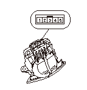

NAV.ガイド/HFTスイッチの点検
付近にSRSエアバッグ システムの構成部品がある場合、SRSエアバッグ システムに記載されている作業上の注意、構成図などを参照し、作業を進めること。
NAV.ガイド/HFTスイッチを取外す。
各ポジションでNo.2端子とNo.4端子間の抵抗を測定する。
ポジション
抵抗値
何も押さない
約10kΩ
オン フック スイッチ
約47Ω
オフ フック スイッチ
約220Ω
取消しスイッチ
約650Ω
発話スイッチ
約2.2kΩ
基準値から外れている場合は、NAV.ガイド/HFTスイッチを交換する。
